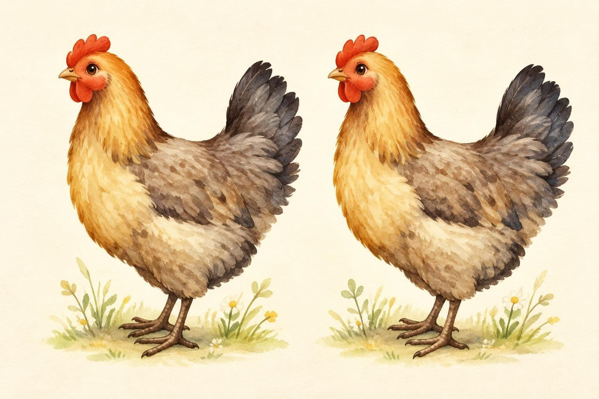
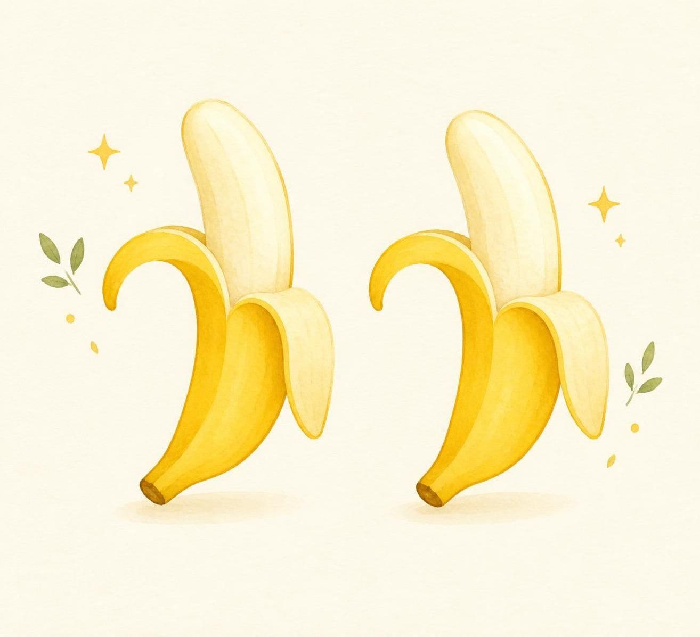
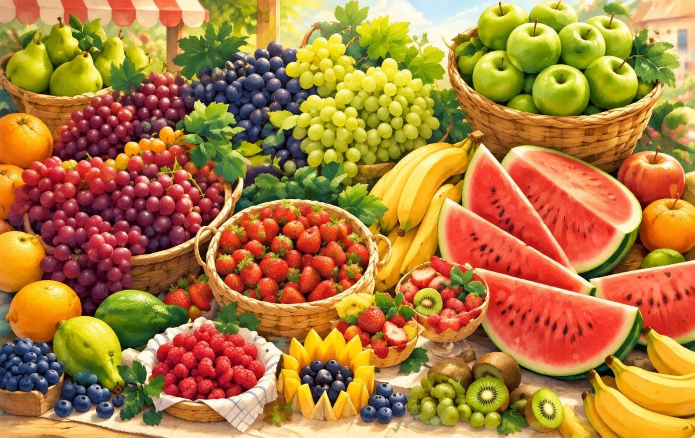
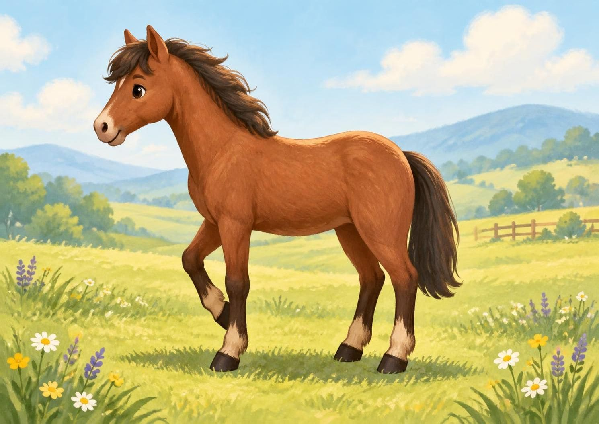
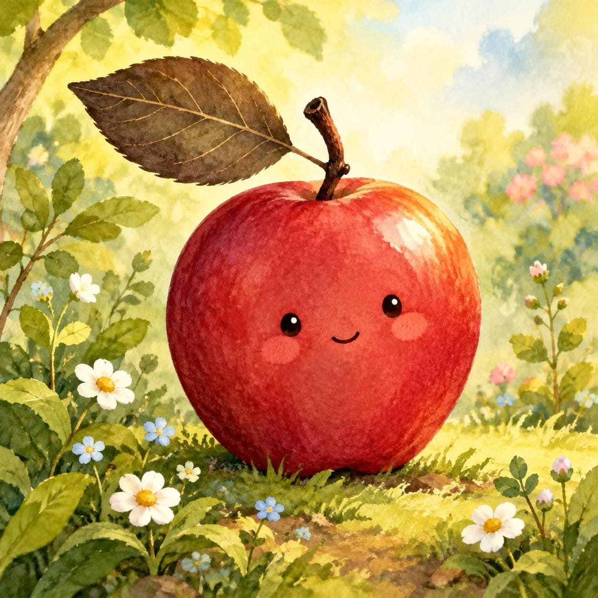
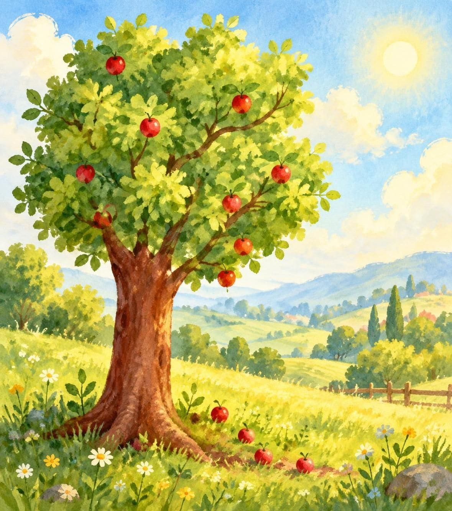
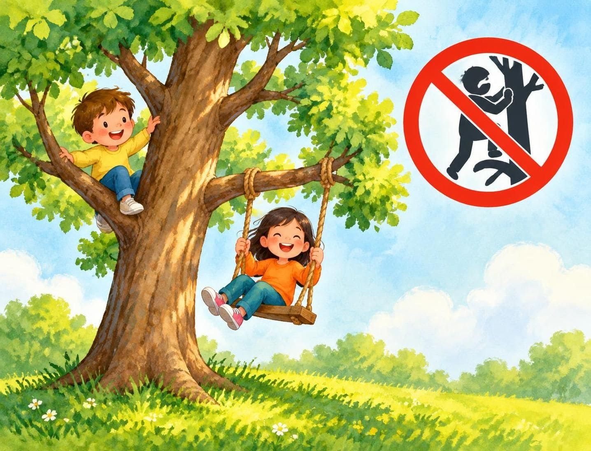
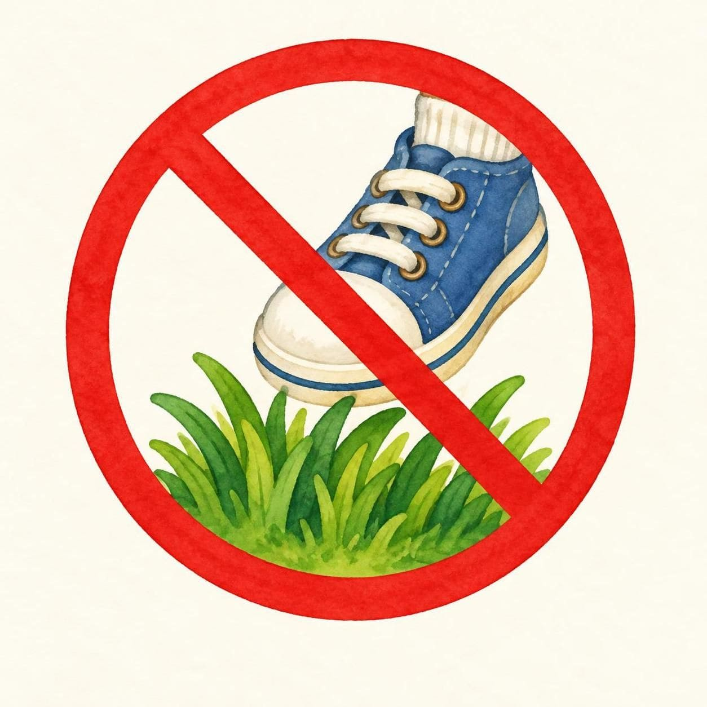

🔊 اسْتَمِعْ جَيِّدًا إِلَى النَّصِّ الْمَنْطُوقِ: «جُنَيْنَتِي»
أَنْصِتْ بِتَرْكِيزٍ إِلَى الْمَقْطَعِ الصَّوْتِيِّ ثُمَّ أَجِبْ عَنِ الْأَسْئِلَةِ التَّالِيَةِ:
أَسْتَمِعُ وَأُجِيبُ :
1. مَاذَا يُوجَدُ فِي الْجُنَيْنَةِ ؟
2. لِمَاذَا احْتَارَ هَذَا الطِّفْلُ ؟
3. مَا هُمَا الْفَاكِهَتَانِ اللَّتَانِ اشْتَهَاهُمَا ؟
4. مَعَ مَنْ رَاحَ يَلْهُو ؟ أَيْنَ ؟ مَاذَا فَعَلُوا عِنْدَمَا أَحَسُّوا بِالْجُوعِ ؟
5. مَاذَا حَدَثَ لِلْأَطْفَالِ بَعْدَ أَنْ أَكَلُوا الْكَثِيرَ مِنَ الْفَوَاكِهِ ؟
6. مَا هِيَ الثِّمَارُ الَّتِي تَكْثُرُ فِي فَصْلِ الصَّيْفِ ؟
أَسْتَعْمِلُ الصِّيَغَ : ( اللَّتَانِ - اللَّذَانِ )
• الثَّمَرَتَانِ اللَّتَانِ اشْتَهَيْتُهُمَا تُفَّاحٌ وَخَوْخٌ.
• الْوَلَدَانِ اللَّذَانِ لَعِبَا مَعِي هُمَا رَامِي وَفَادِي.
عَبِّرْ عَنِ الصُّوَرِ مُسْتَعْمِلًا ( اللَّتَانِ ، اللَّذَانِ ) :
الدُّبَّانِ ....... يَتَعَانَقَانِ لَطِيفَانِ.

الدَّجَاجَتَانِ ....... فِي الْمَزْرَعَةِ سَمِينَتَانِ.

الْمَوْزَتَانِ ....... أَكَلْتُهُمَا لَذِيذَتَانِ.
الْوَلَدَانِ ....... يَلْعَبَانِ بِالْكُرَةِ مَاهِرَانِ.
السَّمَكَتَانِ ....... تَسْبَحَانِ فِي الْبَحْرِ جَمِيلَتَانِ.
أُنْتِجُ شَفَهِيًّا : تَأَمَّلْ صُورَةَ الْفَوَاكِهِ ثُمَّ أَجِبْ : الْفَوَاكِهُ لَذِيذَةٌ، فَهَلْ يَسْتَفِيدُ الْجِسْمُ مِنْهَا أَمْ نَسْتَمْتِعُ بِمَذَاقِهَا فَقَطْ ؟

نَتِيجَةُ هَذَا الْقِسْمِ:
صَحِيحَة: 0 | خَاطِئَة: 0
🔒 أَكْمِلْ جَمِيعَ أَسْئِلَةِ الْقِسْمِ السَّابِقِ لِفَتْحِ هَذَا الْقِسْمِ
الْفُصُولُ الْأَرْبَعَةُ
إِنَّهُ الرَّبِيعُ ! الْبُذُورُ نَهَضَتْ مِنْ نَوْمِهَا وَالْأَشْجَارُ الْعَارِيَةُ كَسَتْهَا بَرَاعِمُ طَرِيَّةٌ وَأَوْرَاقٌ خَضْرَاءُ ، السُّنُونُو عَادَتْ فِي السَّمَاءِ تَحُومُ وَالْعَنْدَلِيبُ يَشْدُو بِالْغِنَاءِ .
وَيَحُلُّ فَصْلُ الصَّيْفِ . النَّهَارُ طَوِيلٌ وَمُشْمِسٌ ، اسْمَعُوا خَرِيرَ الْمَاءِ وَحَفِيفَ الْأَوْرَاقِ تَهُزُّهَا نَسْمَةُ الصَّبَاحِ ، وَانْظُرُوا إِلَى الْفَرَاشَاتِ عَلَى الْأَزْهَارِ ، وَكُلُّ الْخُضَرِ تَسْتَعِدُّ لِتَسْتَعْرِضَ جَمَالَهَا .
هَا هُوَ الْخَرِيفُ ، فَصْلُ الرُّمَّانِ وَالتُّمُورِ ، كَثِيرٌ مِنَ الْأَشْجَارِ تَعَرَّتْ مِنْ أَوْرَاقِهَا . الْعَصَافِيرُ خَفَتَتْ أَصْوَاتُهَا . جَاءَتِ الْغُيُومُ بِالْأَمْطَارِ وَسَقَتِ الْأَرْضَ ، فَبَدَأَتِ الْبُذُورُ تَغُوصُ فِي التُّرْبَةِ .... سُكُوتٌ . الْأَرْضُ تَسْتَرِيحُ .
وَيَأْتِي الشِّتَاءُ . الشَّمْسُ تَخِفُّ حَرَارَتُهَا ، الْأَرْضُ تَرْتَوِي الْأَوْدِيَةُ تَعُودُ إِلَى الْحَيَاةِ الْأَمْوَاجُ وَالْكُثْبَانُ تُحَرِّكُهَا الْعَوَاصِفُ الْهَوْجَاءُ . فِي الْمُرْتَفَعَاتِ تَتَرَاكُمُ الثُّلُوجُ عَلَى الْقِمَمِ ، وَفِي الْمُنْخَفَضَاتِ يَزْحَفُ الضَّبَابُ وَتَعُودُ الْبُذُورُ الْمُتَزَاحِمَةُ دَاخِلَ التُّرْبَةِ النَّدِيَّةِ إِلَى الْحَيَاةِ ، وَتَسْتَيْقِظُ مَعَهَا الطَّبِيعَةُ . الشِّتَاءُ رَحَلَ مَرْحَبًا بِكَ يَا فَصْلَ الرَّبِيعِ .
- فَاطِمَةُ بَخَاي - مِنْ كِتَابِ / دَوْرَةِ الْفُصُولِ
كَلِمَاتِي الْجَدِيدَةُ :
تَحُومُ : تَجُولُ ، تَدُورُ
بَرَاعِمُ : زَهْرَةُ النَّبَاتِ قَبْلَ أَنْ تَتَفَتَّحَ
الْكُثْبَانُ : الرِّمَالُ الْمُتَرَاكِمَةُ
تَغُوصُ : تَدْخُلُ فِي الْأَعْمَاقِ
الْهَوْجَاءُ : الْعَنِيفَةُ
أَقْرَأُ وَأَفْهَمُ (ص 66) :
1. عَمَّ يَتَحَدَّثُ النَّصُّ ؟
2. مَا هُوَ الْفَصْلُ الَّذِي ذُكِرَ مَرَّتَيْنِ فِي النَّصِّ ؟
3. مَاذَا يَحْدُثُ لِلْأَشْجَارِ فِي فَصْلِ الرَّبِيعِ ؟
4. جِدْ ضِدَّ كُلِّ كَلِمَةٍ فِي النَّصِّ :
ضِدُّ كَلِمَةِ ( حَلَّ ) :
ضِدُّ كَلِمَةِ ( يَابِسَةٌ ) :
ضِدُّ كَلِمَةِ ( الْجَافَّةُ ) :
5. بِمَ يَتَمَيَّزُ فَصْلُ الصَّيْفِ ؟ وَمَنْ يَسْتَعِدُّ لِيَعْرِضَ جَمَالَهُ ؟
6. مَا هِيَ الْفَوَاكِهُ الْمَوْجُودَةُ فِي فَصْلِ الْخَرِيفِ ؟ وَمَاذَا يَحْدُثُ لِلْأَشْجَارِ وَالْعَصَافِيرِ ؟
7. كَيْفَ تَكُونُ دَرَجَةُ الْحَرَارَةِ فِي فَصْلِ الشِّتَاءِ ؟ وَمَا الَّذِي يَتَرَاكَمُ عَلَى قِمَمِ الْجِبَالِ وَمَاذَا يَزْحَفُ فِي الْمُنْخَفَضَاتِ ؟
8. رَحَّبَتِ الْكَاتِبَةُ بِالرَّبِيعِ، مَاذَا قَالَتْ ؟ وَلِمَاذَا ؟
9. مَا هِيَ فَائِدَةُ كُلِّ فَصْلٍ مِنَ الْفُصُولِ ؟
10. هَلْ يُمْكِنُ أَنْ نَسْتَغْنِيَ عَنْ أَحَدِ الْفُصُولِ ؟ لِمَاذَا ؟
11. اشْرَحِ الْعِبَارَةَ التَّالِيَةَ : ( تَسْتَيْقِظُ مَعَهَا الطَّبِيعَةُ )
نَتِيجَةُ هَذَا الْقِسْمِ:
صَحِيحَة: 0 | خَاطِئَة: 0
🔒 أَكْمِلْ جَمِيعَ أَسْئِلَةِ الْقِسْمِ السَّابِقِ لِفَتْحِ هَذَا الْقِسْمِ
أَوَّلًا: أَتَعَرَّفُ عَلَى الْجُمْلَةِ الْاسْمِيَّةِ
أُلَاحِظُ وَأُمَيِّزُ :
• الْأَشْجَارُ عَارِيَةٌ. | • الْبَرَاعِمُ طَرِيَّةٌ. | • النَّهَارُ طَوِيلٌ. | • الْجَوُّ لَطِيفٌ.
الْقَاعِدَةُ: الْجُمْلَةُ الَّتِي تَبْدَأُ بِاسْمٍ تُسَمَّى الْجُمْلَةَ الْاسْمِيَّةَ مِثْلَ : * الشِّتَاءُ بَارِدٌ.
مَا نَوْعُ الْكَلِمَةِ فِي بِدَايَةِ كُلِّ جُمْلَةٍ مِنَ الْجُمَلِ السَّابِقَةِ (الْأَشْجَارُ، الْبَرَاعِمُ، النَّهَارُ، الْجَوُّ) ؟
مَيِّزِ الْجُمْلَةَ الْاسْمِيَّةَ مِمَّا يَلِي :
ثَانِيًا: أَكْتَشِفُ وَأَسْتَعْمِلُ التَّاءَ الْمَفْتُوحَةَ
أُلَاحِظُ وَأُمَيِّزُ : كَثِيرٌ مِنَ الْأَشْجَارِ تَعَرَّتْ مِنْ أَوْرَاقِهَا، الْعَصَافِيرُ خَفَتَتْ أَصْوَاتُهَا، جَاءَتِ الْغُيُومُ بِالْأَمْطَارِ وَسَقَتِ الْأَرْضَ، فَبَدَأَتِ الْبُذُورُ تَغُوصُ فِي التُّرْبَةِ.
الْقَاعِدَةُ: أَكْتُبُ التَّاءَ الْمَفْتُوحَةَ فِي الْأَفْعَالِ وَأَنْطِقُهَا دَائِمًا مِثْلَ : * فَاتَ * نَهَضْتُ * خِفْتُ.
نَوْعُ هَذِهِ الْكَلِمَاتِ (تَعَرَّتْ، خَفَتَتْ، جَاءَتْ، سَقَتْ، بَدَأَتْ) هُوَ :
اخْتَرِ الْجَوَابَ الصَّحِيحَ مِمَّا بَيْنَ قَوْسَيْنِ :
• أَشْرَقَ الشَّمْسُ ، وَأَرْسَلَ أَشِعَّتَهَا الذَّهَبِيَّ عَلَى حَدِيقَ مَنْزِلِنَا ، فَابْتَسَمَ الْوُرُودُ وَغَرَّدَ الْعَصَافِيرُ .
ثَالِثًا: أُثْرِي لُغَتِي
جِدْ لِكُلِّ طَائِرٍ صِفَاتِهِ : ( الْبُومَةُ ، الطَّاوُوسُ ، الْبَبَّغَاءُ ، السُّنُونُوَّةُ ، النَّسْرُ ، النَّعَامَةُ )
نَتِيجَةُ هَذَا الْقِسْمِ:
صَحِيحَة: 0 | خَاطِئَة: 0
🔒 أَكْمِلْ جَمِيعَ أَسْئِلَةِ الْقِسْمِ السَّابِقِ لِفَتْحِ هَذَا الْقِسْمِ
2. أَسْتَعْمِلُ الصِّيغَةَ :
• وَظِّفْ ( اللَّتَانِ ) فِي جُمْلَةٍ مُفِيدَةٍ : اخْتَرِ الْجُمْلَةَ الصَّحِيحَةَ
• وَظِّفْ ( اللَّذَانِ ) فِي جُمْلَةٍ مُفِيدَةٍ : اخْتَرِ الْجُمْلَةَ الصَّحِيحَةَ
نَتِيجَةُ هَذَا الْقِسْمِ:
صَحِيحَة: 0 | خَاطِئَة: 0
🔒 أَكْمِلْ جَمِيعَ أَسْئِلَةِ الْقِسْمِ السَّابِقِ لِفَتْحِ هَذَا الْقِسْمِ
1. أَفْهَمُ النَّصَّ : أَكْمِلِ النَّاقِصَ فِي كُلِّ جُمْلَةٍ :
• يَشْدُو الْعَنْدَلِيبُ بِالْغِنَاءِ فِي .........
• الصَّيْفُ فَصْلُ .........
• فِي الْخَرِيفِ تَتَعَرَّى الْأَشْجَارُ مِنْ .........
• تَخِفُّ حَرَارَةُ الشَّمْسِ وَتَرْتَوِي الْأَرْضُ فِي فَصْلِ .........
• بَعْدَمَا يَنْتَهِي فَصْلُ الشِّتَاءِ يَعُودُ ......... مِنْ جَدِيدٍ.
2. أُوَظِّفُ الْجُمْلَةَ الْاسْمِيَّةَ (1) : كَوِّنْ مِنَ الْبِطَاقَاتِ التَّالِيَةِ جُمَلًا اسْمِيَّةً : ( الثَّلْجُ ، الْأَشْجَارُ ، الْفَرَاشَاتُ ، الْبَرْدُ | كَثِيفٌ ، قَارِسٌ ، زَاهِيَةٌ ، ظَلِيلَةٌ )
3. أُوَظِّفُ الْجُمْلَةَ الْاسْمِيَّةَ (2) : حَوِّلِ الْجُمَلَ التَّالِيَةَ حَسَبَ النَّمُوذَجِ : [ تَشْتَدُّ الْعَاصِفَةُ ← اشْتِدَادُ الْعَاصِفَةِ ]
4. إِمْلَاءٌ : أَكْمِلِ الْفِقْرَةَ بِالتَّاءِ الْمُنَاسِبَةِ ( تْ / ةُ ) :
حَلَّ فَصْلُ الرَّبِيعِ، فَتَفَتَّحَ الْأَزْهَارُ وَأَوْرَقَ الْأَشْجَارُ، وَأَيْنَعَ الثِّمَارُ وَزَقْزَقَ الْعَصَافِيرُ، وَحَلَّقَ الْأَطْيَارُ، وَنَبَتَ الزَّرْعُ وَاسْتَبْشَرَ الْكَائِنَاتُ وَتَزَيَّنَ الْحَدِيقَةُ.
نَتِيجَةُ هَذَا الْقِسْمِ:
صَحِيحَة: 0 | خَاطِئَة: 0
🔒 أَكْمِلْ جَمِيعَ أَسْئِلَةِ الْقِسْمِ السَّابِقِ لِفَتْحِ هَذَا الْقِسْمِ
1. أَكْمِلِ الْمُخَطَّطَ ( الْفُصُولُ الْأَرْبَعَةُ ) بِمَا يُنَاسِبُ :
• فِي ......... تَتَفَتَّحُ الْأَزْهَارُ :
• فِي ......... تَسْتَعْرِضُ الْخُضَرُ جَمَالَهَا :
2. امْلَأِ الْفَرَاغَ بِإِحْدَى الصِّيغَتَيْنِ ( اللَّذَانِ ، اللَّتَانِ ) :
• الشَّجَرَتَانِ ......... غَرَسَهُمَا وَالِدِي أَثْمَرَتَا ثِمَارًا حُلْوَةً.
• الْعُصْفُورَانِ ......... أَمْسَكْنَا بِهِمَا طَارَا.
• هَا هُمَا الْوَلَدَانِ ......... سَاعَدَانَا فِي جَنْيِ الزَّيْتُونِ.
• الْفَتَاتَانِ ......... حَضَرَتَا مَعَنَا فِي النُّزْهَةِ غَادَرَتَا مَسْرُورَتَيْنِ.
3. أَرْبِطُ بِمَا يُنَاسِبُ :
4. أَكْمِلْ بِالْكَلِمَةِ الْمُنَاسِبَةِ لِتَتَحَصَّلَ عَلَى جُمْلَةٍ اسْمِيَّةٍ :

......... أَصِيلٌ .

......... لَذِيذَةٌ .

......... مُثْمِرَةٌ .
5. اخْتَرِ التَّاءَ الْمُنَاسِبَةَ :
• بَرَدَ الْأَجْوَاءُ فِي فَصْلِ الشِّتَاءِ ، فَارْتَدَيْ مَلَابِسِي الصُّوفِيَّ .
• تَعَرَّ الْأَشْجَارُ فِي فَصْلِ الْخَرِيفِ ، وَبَدَأَ الدِّرَاسَةُ .
6. أَكْمِلْ مَلْءَ الْجَدْوَلِ ( الْحَيَوَانُ وَصَوْتُهُ ) :
| الْحَيَوَانُ |
صَوْتُهُ |
| الْقِطُّ |
|
|
الْهَدِيلُ |
|
الصَّهِيلُ |
نَتِيجَةُ هَذَا الْقِسْمِ:
صَحِيحَة: 0 | خَاطِئَة: 0
🔒 أَكْمِلْ جَمِيعَ أَسْئِلَةِ الْقِسْمِ السَّابِقِ لِفَتْحِ هَذَا الْقِسْمِ
لَاحِظْ كَيْفِيَّةَ كِتَابَةِ التَّعْلِيمَاتِ :
وَأَنَا ذَاهِبٌ إِلَى الْمَدْرَسَةِ اسْتَوْقَفَتْنِي أُمِّي قَائِلَةً : الْجَوُّ عَاصِفٌ فِي الْخَارِجِ .
- ارْتَدِ مَلَابِسَكَ الصُّوفِيَّةَ . - احْمِلْ مِطَرِيَّتَكَ .
- اتَّجِهْ مُبَاشَرَةً نَحْوَ الْمَدْرَسَةِ . - لَا تَمْشِ فَوْقَ بِرَكِ الْمَاءِ وَالْوَحْلِ .
1. مَا نَوْعُ الْأَفْعَالِ الْمُلَوَّنَةِ فِي التَّعْلِيمَاتِ ( ارْتَدِ ، احْمِلْ ، اتَّجِهْ ) ؟
2. مَا هِيَ التَّعْلِيمَةُ الَّتِي وَرَدَ فِيهَا نَهْيٌ عَنِ الْقِيَامِ بِعَمَلٍ مَا ؟
3. بِمَاذَا بَدَأَتْ كُلُّ تَعْلِيمَةٍ ؟ وَبِمَ انْتَهَتْ ؟
4. أَكْمِلْ هَذِهِ الْقِصَّةَ بِكِتَابَةِ تَعْلِيمَاتٍ مُسْتَعِينًا بِالصُّوَرِ :
فِي الرَّبِيعِ نَظَّمَتْ مَدْرَسَتُنَا رِحْلَةً إِلَى حَدِيقَةِ الْحَيَوَانَاتِ بِـ «تَازَا» الْكَائِنَةِ بِوِلَايَةِ جِيجَل . وَلَمَّا حَانَ وَقْتُ الْانْطِلَاقِ اسْتَوْقَفَتْنَا مُدِيرَةُ الْمَدْرَسَةِ قَائِلَةً : أَبْنَائِي الْأَعِزَّاءَ، تَمَتَّعُوا بِهَذِهِ الزِّيَارَةِ، وَلَكِنْ :
• امْشُوا جَمَاعَاتٍ وَلَا تَتَفَرَّقُوا، وَاسْتَمِعُوا إِلَى إِرْشَادَاتِ مُعَلِّمِكُمْ .

التَّعْلِيمَةُ الْأُولَى :

التَّعْلِيمَةُ الثَّانِيَةُ :

التَّعْلِيمَةُ الثَّالِثَةُ :

التَّعْلِيمَةُ الرَّابِعَةُ :
فَهِمْنَا هَذِهِ التَّوْجِيهَاتِ، وَانْطَلَقْنَا فِي الرِّحْلَةِ وَنَحْنُ نَتَمَنَّى قَضَاءَ أَجْمَلِ الْأَوْقَاتِ .
نَتِيجَةُ هَذَا الْقِسْمِ:
صَحِيحَة: 0 | خَاطِئَة: 0